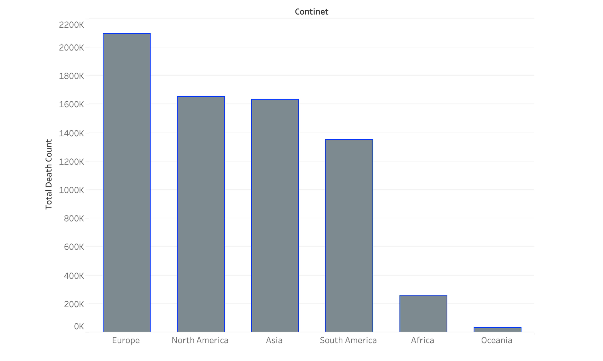
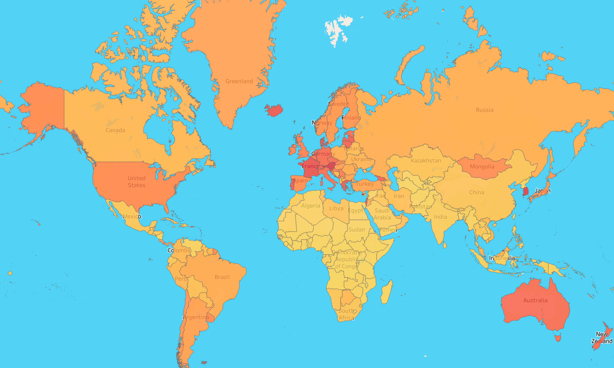
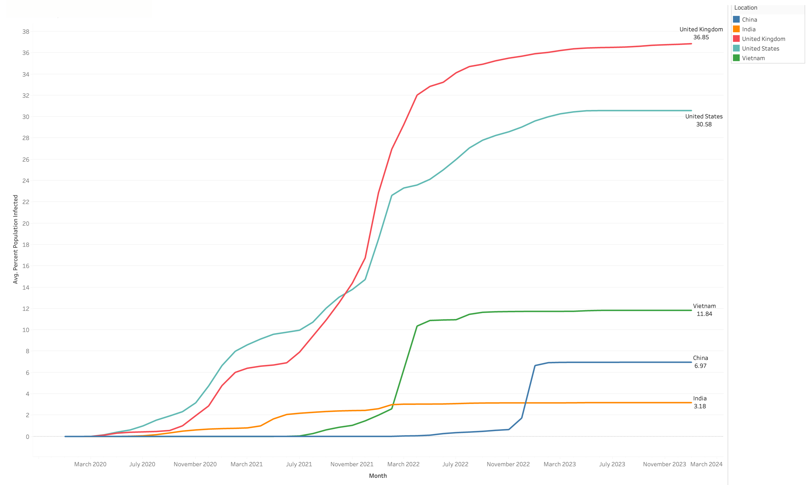

The project focuses on analyzing COVID-19 death data to understand global and regional trends. It calculates total cases, total deaths, death percentages, identifies countries with the highest death tolls, and analyzes locations with the highest overall and daily infection rates relative to population.
Covid-19 Overview
Methodology:
Data Acquisition: COVID-19 death data retrieved from a SQL Server database ("PortfolioProject.CovidDeaths").
Data Analysis: SQL queries formulated to extract specific data for visualization (Global Overview, Death Counts, Infection Rates).
Data Visualization: Tableau used to create visualizations from the extracted data.
Benefits:
Gain insights into the global picture of COVID-19 deaths.
Identify countries with the highest death tolls.
Analyze locations with the highest overall and daily infection rates.
Potentially identify factors influencing death rates and infection rates.
Tools:
SQL for data extraction: The project utilizes four SQL queries to extract specific data for visualization. Click here for more details: github.com/huynhtanphan/covid-19_overview
Tableau for data visualization: The project utilizes Tableau to construct a COVID-19 overview dashboard. Click here for more details: public.tableau.com/views/Covid_19-overview
Data Used:
Raw data can be downloaded from: ourworldindata.org/covid-deaths and other reputable data sources.
Charts:

Total deaths per Continet.

Percent population infected per Country.

Percent population infected.
Notes:
Project was conducted Mar 2024
Update data regularly to ensure accurate analysis results
Utilize various SQL queries to perform data analysis based on specific needs